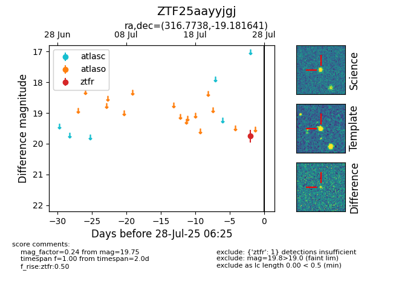

Target ZTF25aayyjgj at 2025-07-28 06:25, see:
FINK: fink-portal.org/ZTF25aayyjgj
Lasair: lasair-ztf.lsst.ac.uk/objects/ZTF25aayyjgj
ALeRCE: alerce.online/object/ZTF25aayyjgj
alt names
ZTF25aayyjgj (ztf,fink)
coordinates:
equatorial (ra, dec) = (316.7738,-19.18164)
galactic (l, b) = (29.1271,-38.23015)
photometry
last ztfr=19.75
1 ztfr detections
